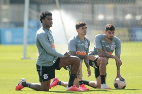
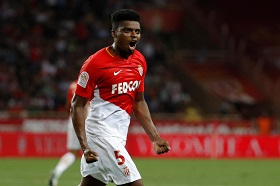
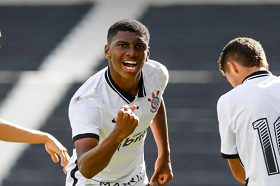

Últimas notícias
Reforço para a mulecada
Daniel Penha, meia-atacante de 22 anos do Atlético Mineiro é contratado para reforçar a equipe Sub-23 do
corinthians.

Último treino
É realizado nesta terça-feira(27) o último treino da equipe antes do jogo contra o América Mineiro pelas
oitavas da Copa do Brasil.

Joga ou não joga?
O técnico Vagner Mancini busca conntar com Gustavo Mantuan na próxima partida, mesmo com o atleta convocado
pela seleção brasileira e com jogo poucas horas antes.

Novo reforço vindo aí?
Boatos sobre a contratação do zagueiro Jemerson, atualmente no Monaco, faz torcida se empolgar nas redes
sociais.
